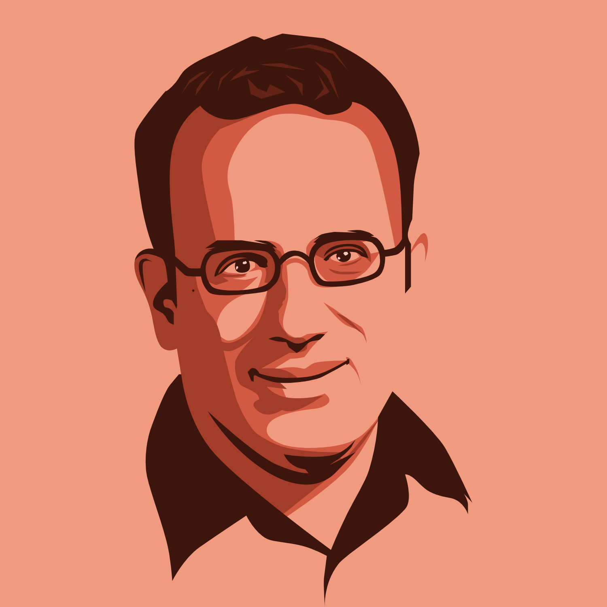

Brendan Eich
Javascript Founder
1961 - Present
Brendan Eich is a renowned computer scientist and software developer, born on July 4, 1961, in Pittsburgh, Pennsylvania.
He gained widespread recognition for his pivotal role in the world of web development as the creator of JavaScript,
a programming language that transformed the landscape of interactive and dynamic web pages.
Eich's journey in technology includes his time at Netscape Communications Corporation in 1995, where he developed JavaScript in a remarkable 10-day sprint.
Beyond his contributions to JavaScript, he co-founded the Mozilla project in 1998, advocating for open
web standards. Eich's commitment to advancing technology and privacy is further exemplified by his
co-founding of Brave Software in 2016,
a company dedicated to developing the privacy-focused web browser, Brave. With a career marked by innovation and advocacy,
Brendan Eich continues to shape the world of web development and contribute significantly to the evolution of the digital landscape.

Biographies
- Birth and Early Life : Brendan Eich was born on July 4, 1961, in Pittsburgh, Pennsylvania, USA.
- Education :He earned a Bachelor of Science degree in Mathematics and Computer Science from Santa Clara University in 1983.
- Career at Netscape :
- Brendan Eich joined Netscape Communications Corporation in 1995.
- He was tasked with creating a scripting language for the Netscape Navigator web browser, which led to the development of JavaScript.
- JavaScript Creation :
- In 1995, Eich implemented the first version of JavaScript in just 10 days.
- JavaScript was initially named "Mocha" and later "LiveScript" before settling on "JavaScript."
- Co-founding Mozilla : Eich played a key role in the founding of the Mozilla project in 1998, where the Mozilla web browser and the Firefox browser later emerged
- Cofounding Brave Software : In 2016, Brendan Eich co-founded Brave Software, a company that developed the privacy-focused web browser, Brave.
- Contributions and Recognition :
- Eich has made significant contributions to the development of web standards and open-source projects.
- He is widely recognized for his role in creating JavaScript, a programming language that revolutionized web development.
- Other Ventures : Aside from his work on browsers, Eich has been involved in various ventures and initiatives related to technology and software development.
- Advocacy for Web Standards and Privacy : Eich has been an advocate for open web standards and user privacy throughout his career.
- Public Speaking and Writing : Brendan Eich is known for his public speaking engagements and has written articles and blog posts on topics related to technology and programming.
- Personal Life : Information about Eich's personal life, family, and interests may not be as widely publicized.